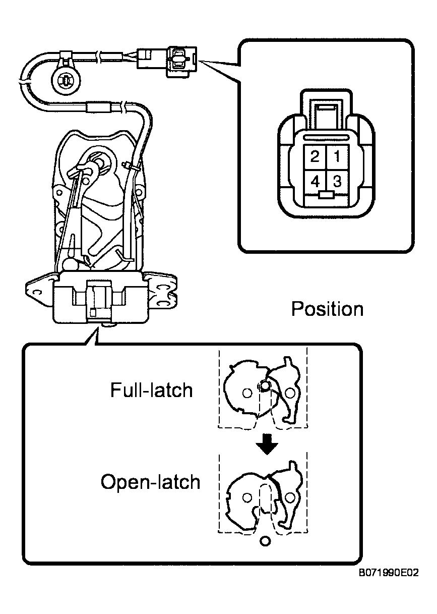
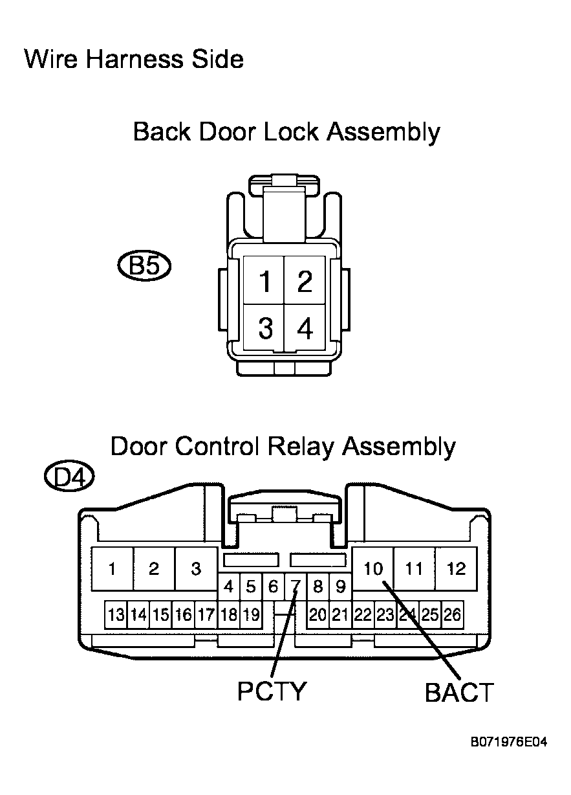
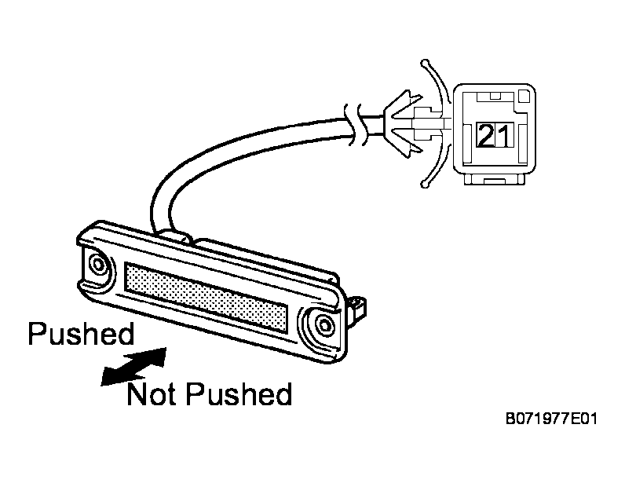
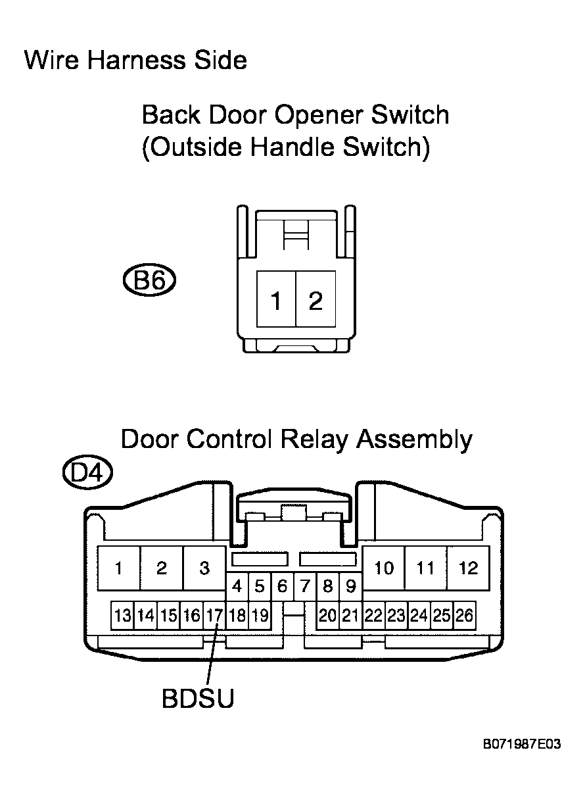

Inspection Procedure
- INSPECT BACK DOOR LOCK ASSEMBLY (DOOR LOCK MOTOR)
- Using a screwdriver, move the latch to the full-latch position.
- Apply battery voltage to the door lock terminals and check operation of the latch.
OK : Go to Next Step
Courtesy of © TOYOTA, LICENSE AGREEMENT TMS1002MEASUREMENT SPECIFIED CONDITIONMeasurement Condition Specified Condition Battery positive (+) -->Terminal 3
Battery negative (-) -->Terminal 4Latch turns to open-latch position
NG : REPLACE BACK DOOR LOCK ASSEMBLY
OK : Go to Next Step
- INSPECT BACK DOOR LOCK ASSEMBLY (COURTESY SWITCH)
- Measure the resistance of the courtesy switch.
Standard resistance

Courtesy of © TOYOTA, LICENSE AGREEMENT TMS1002TESTER CONNECTION SPECIFIED CONDITIONTester Connection Door Lock Latch Condition Specified Condition 1 - 2 Open-latch Below 1 Ω 1 - 2 Full-latch 10 kΩ or higher
NG : REPLACE BACK DOOR LOCK ASSEMBLY
OK : Go to Next Step
- Measure the resistance of the courtesy switch.
- CHECK WIRE HARNESS (BACK DOOR LOCK - DOOR CONTROL RELAY AND BODY GROUND)
- Disconnect the B5 lock connector.
- Disconnect the D4 relay connector.
- Measure the resistance of the wire harness side connectors.
Standard resistance

Courtesy of © TOYOTA, LICENSE AGREEMENT TMS1002TESTER CONNECTION SPECIFIED CONDITIONTester Condition Specified Condition B5-3 - D4-10 (BACT) Below 1 Ω B5-2 - D4-7 (PCTY) Below 1 Ω B5-1 - Body ground Below 1 Ω B5-4 - Body ground Below 1 Ω
NG : REPAIR OR REPLACE HARNESS AND CONNECTOR
OK : Go to Next Step
- INSPECT BACK DOOR OPENER SWITCH ASSEMBLY (OUTSIDE HANDLE SWITCH)
- Remove the back door opener switch.
- Measure the resistance of the switch.
Standard resistance

Courtesy of © TOYOTA, LICENSE AGREEMENT TMS1002TESTER CONNECTION SPECIFIED CONDITIONTester Connection Switch Condition Specified Condition 1 - 2 Not pushed 10 kΩ or higher 1 - 2 Pushed Below 1 Ω
NG : REPLACE BACK DOOR OPENER SWITCH ASSEMBLY
OK : Go to Next Step
- CHECK WIRE HARNESS (BACK DOOR OPENER SWITCH (OUTSIDE HANDLE SWITCH) -DOOR CONTROL RELAY AND BODY GROUND)
- Disconnect the B6 switch connector.
- Disconnect the D4 relay connector.
- Measure the resistance of the wire harness side connectors.
Standard resistance

Courtesy of © TOYOTA, LICENSE AGREEMENT TMS1002TESTER CONNECTION SPECIFIED CONDITIONTester Connection Specified Condition B6-2 - D4-17 (BDSU) Below 1 Ω B6-1 - Body ground Below 1 Ω
NG : REPAIR OR REPLACE HARNESS AND CONNECTOR
OK : REPLACE DOOR CONTROL RELAY ASSEMBLY